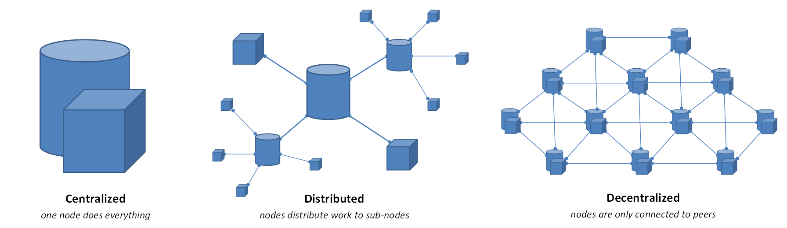
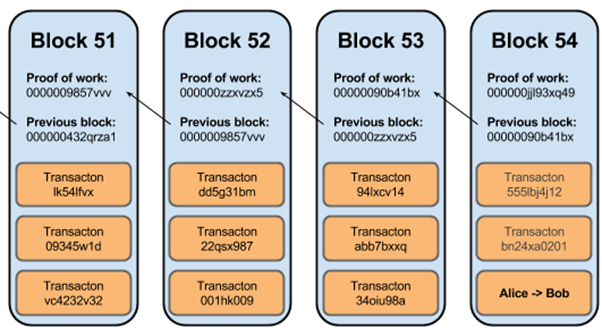

- Криптография (криптоанализ)
- Распределенные сети (вычисления)
- Децентрализированные приложения - dApps (Blockchain dApps)
- Blockchain
- Умные контракты (smart-contracts)
Криптография (криптоанализ)
- Шифры
- Хеш-функции
- Цифровые подписи
- Протоколы аутентификации
- Протоколы распределения ключей
Распределенные вычисления
Распределенные вычисления - выделение ресурсов, как аппаратных так и программных каждым узлом (компьютером) сети

Децентрализированные приложения – dApps
... приложения работающие в P2P сетях, а не на одном компьютере.
Это разновидность ПО специально спроектированная для существования только в Internet
и не имеющая контроля из единого центра
Blockchain dApps
- Приложения с полностью открытым исходным кодом (смарт контракт, клиентский скрипт)
- Данные и записи об операциях должны сохраняться с использованием криптографии
Blockchain
цепочка блоков, это непрерывно растущий список записей (блоков), которые связаны между собой и защищены криптографией

ETHEREUM
Ethereum это
- децентрализированная
- прозрачная
- устойчивая к манипуляциям
- аутентифицированная
- публично доступная
база данных / виртуальный компьютер (Ethereum Virtual Machine - EVM)
Smart-contracts
Умные контракты
Что такое смарт-контракт?
Смарт-контракт (англ. Smart contract - умный контракт)
- компьютерный алгоритм, предназначенный для заключения и поддержания самоисполняемых контрактов,
выполняемых в блокчейн-среде.
Такие контракты записываются в виде кода, существующего в распределенном реестре - блокчейне.
Простыми словами, умные контракты позволяют обмениваться активами, не прибегая к услугам посредников.
В чем фишка смарт-контрактов?
-
СК дают возможность выполнять надежные и конфиденциальные
транзакции без участия внешних посредников (нотариусов, банков, государственных органов)
-
транзакции являются прослеживаемыми, прозрачными и необратимыми
-
СК не только содержат информацию об обязательствах сторон и санкциях
за их нарушение, но и сами автоматически обеспечивают выполнение всех условий договора
Как появились умные контракты?
-
[1994] Первые идеи смарт-контрактов были предложены Ником Сабо
(идея использования математического алгоритма для проведения сделок с полным
контролем над их выполнением)
-
[2009] Впервые идеи Сабо воплотились на практике вместе с появлением первой криптовалюты
Bitcoin (Сатоши Накамото) и лежащей в ее основе технологии блокчейн (тьюринг-неполные)
-
[2013] Широкое практическое применение смарт-контракты получили с появлением и
развитием проекта Ethereum его основателем Виталиком Бутериным (тьюринг-полные)
Обязательные атрибуты смарт-контракта
-
использование методов электронной подписи на основе публичных и приватных ключей, имеющихся у двух или более сторон соглашения
-
наличие приватной децентрализованной среды (например, Ethereum), в которую записываются смарт-контракты и которая поддерживает входы и выходы для оракулов, обеспечивающих связь реального и цифрового мира
-
сам предмет договора и наличие необходимых для его исполнения инструментов (криптовалютных расчетных счетов, программ-оракулов и т. д.)
-
точно описанные условия его исполнения, которые участники договора подтверждают подписью, а также достоверность источника цифровых данных
О команде
- Бесплатная стажировка и обучение основам использования технологий с которыми мы работаем (JavaScript (NodeJS), Web3, Solidity)
- Хорошие условия для профессионального роста: разработка софта нового поколения с использованием молодых развивающихся технологий
- Регулярные обучающие семинары, лекции и мастер-классы (Blockchain, криптография, смарт-контракты, JavaScript)